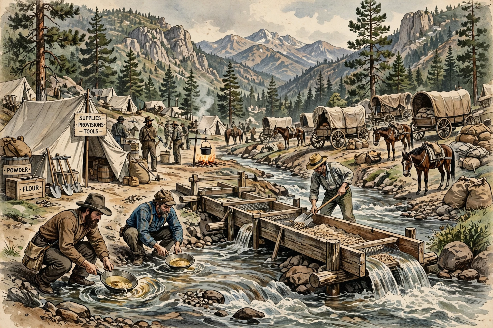

The California Gold Rush (1848–1855) began on January 24, 1848, when James W. Marshall found gold at Sutter's Mill in Coloma, California. News brought about 300,000 people — the 'forty-niners' — to California from the rest of the United States and abroad, transforming the new US territory.

Gold seekers arrived by sea around Cape Horn or via Panama, and overland on the California Trail. San Francisco grew from a small settlement to a boomtown of tens of thousands. Mining evolved from simple panning and sluices to capital-intensive hydraulic mining, which scarred landscapes and silted rivers until restricted by court decisions in the 1880s.
The influx accelerated California's admission as a free state in the Compromise of 1850. It also brought catastrophe for Native Californians, whose population collapsed through disease, displacement and violence, including state-sanctioned killings — now recognised as genocide. Chinese, Latin American and other immigrant miners faced discriminatory taxes and violence. Gold revenues funded banks, railroads and agriculture, making California permanently central to the US economy. See Sutter's Mill and Compromise of 1850.